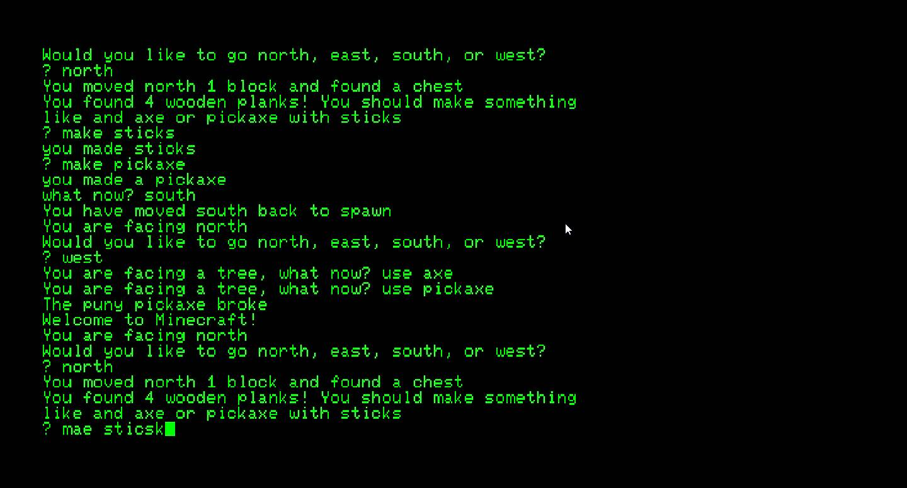
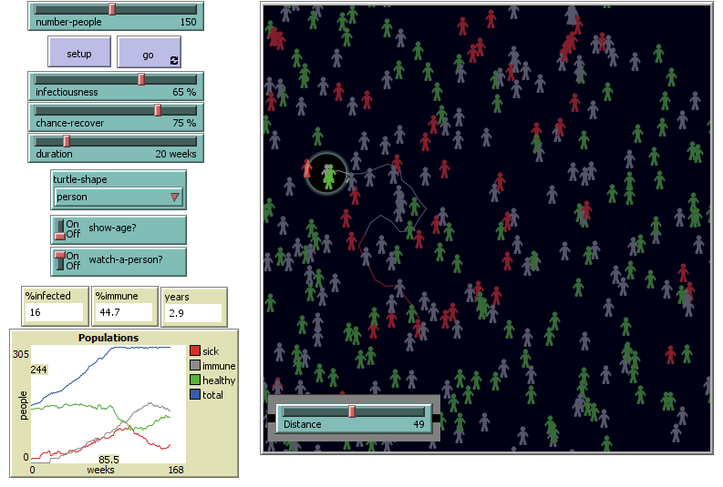

The lightbot program helped us learn the basics of programming
Using the scratch program my partner and I created a soccer game

Using repl.it my partner and I wrote an interactive fiction activity. In the activity we had the player start as a person in a log cabin deep in the woods. The player starts to hear noises and has to investigate, and make the right decisions to avoid dying to an ogre.

NetLogo already had some premade simulations about virus spread, but me and my partner were interested in the effect of social distancing on the rate of infection. We created a new variable distance and displayed that on one actor. However even though the actors want to distance, they have some randomness and won't always be apart.